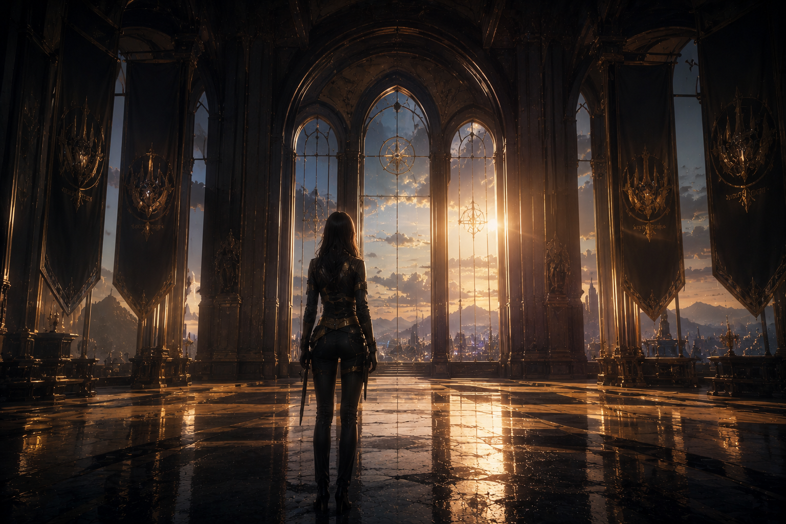
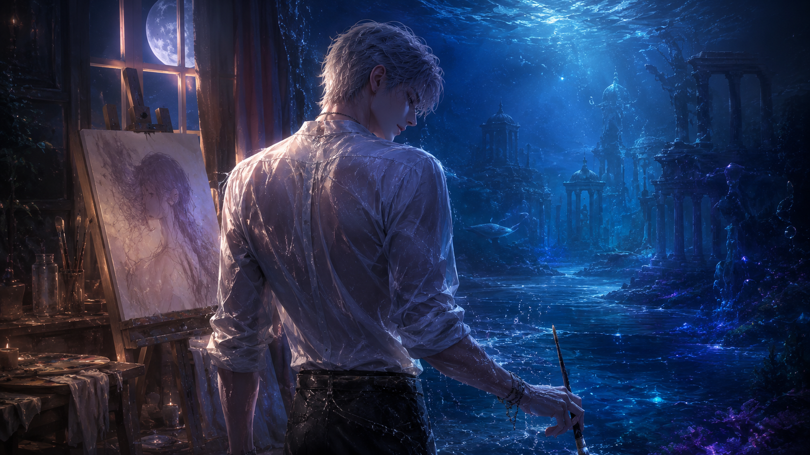
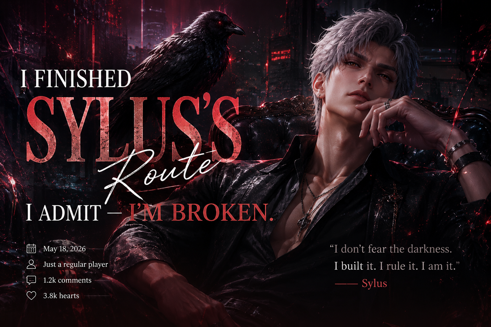
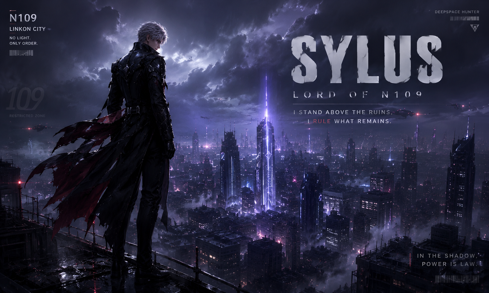
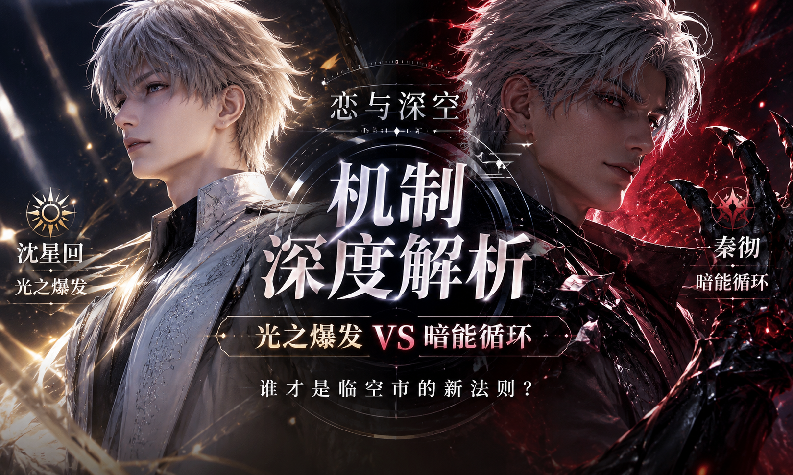

Comparative Analysis
Four Masks, One Truth
Xavier's silence. Zayne's walls. Rafayel's performance. Sylus's armor. Who hides the deepest?
Xavier's silence. Zayne's walls. Rafayel's performance. Sylus's armor. Who hides the deepest?
The Resonance ability that connects her to Sylus, Xavier, Zayne, and Rafayel. What is she really capable of?

The quiet rebellion of being the one who chooses — why MC is not a damsel, not a trophy, but the woman holding the sword.

The artist, the liar, the prince of a kingdom that no longer exists. A deep dive into the thousand-year wait and the fragile soul beneath the performance.

From hating him to falling for him — why the N109 storyline hit harder than I ever expected. A personal reflection.

"To survive the N109 Zone, you must become the monster. But to love within it, you must remember the human."

A Deep Dive into Light Burst Mechanics, Energy Circulation, and the "Infinite Dark Energy" Loop